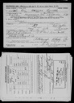
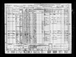

My Family Tree
Person Chart
Parents
| Father | Date of Birth | Mother | Date of Birth |
|---|---|---|---|
 Orion L. Williams Orion L. Williams |
6/1859 |  Mary S. Williams Mary S. Williams |
3/1857 |
Partners
| Partner | Date of Birth | Children |
|---|---|---|
| Pearl Rubie Moncrief |
17 Dec 1893 | Patricia June WilliamsClifford R Williams |
Person Events
| Event Type | Date | Place | Description |
|---|---|---|---|
 Birth Birth |
5/7/1884 | ||
| Death |
11 Oct 1953 | ||
| Burial |
Castle View Memorial Gardens, New Castle, PA |
Facts
| Fact | Description |
|---|---|
| Eye Color | Blue |
| Height | 5' 7" |
| Weight | 141 lbs |
Sources
Media
Pictures

1942 Roy Morrison Williams Draft card

1940 Roy M Williams United States Census